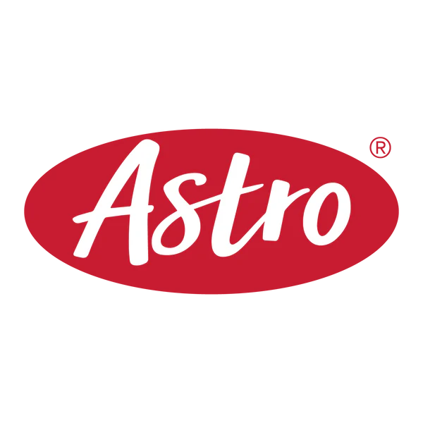
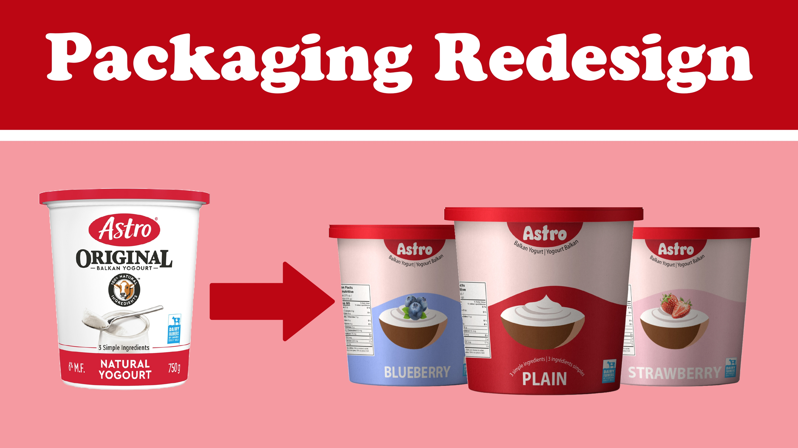
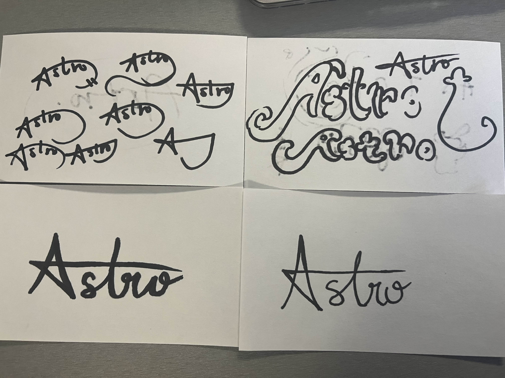

GBDA 202

Packaging
For this project, we were tasked to redesign a brand and its packaging. My partner and I chose Astro Yogurt due to its traditional but cluttered packaging. Consumers today prefer clean, easy-to-navigate packaging that highlights key information. A simplified design would make Astro more approachable, easier to identify on shelves, and instantly recognizable as a high-quality Canadian product.
Design Process
Our design process for the Astro logo began with open-ended sketching. We explored a variety of concepts, from stars (playing off the brand name, Astro) to bold, thick typography that hinted at the richness of the yogurt itself. These early sketches were experimental and helped us get a feel for the different directions the brand could take visually. As we refined our ideas, we started gravitating toward designs that not only reflected the creamy thickness of the yogurt but also the brand in its Canadian identity. This led us to our final logo that visually communicates the product's texture while subtly showcasing Astro’s Canadian heritage through elements like color and symbolism. It’s a balance of taste and tradition — just like the yogurt!

Brand Package